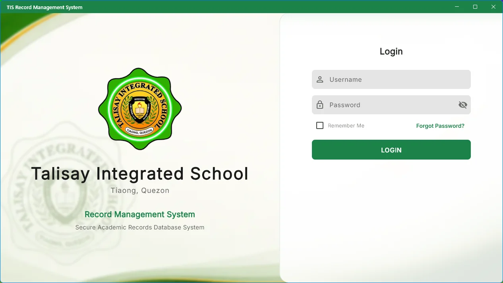
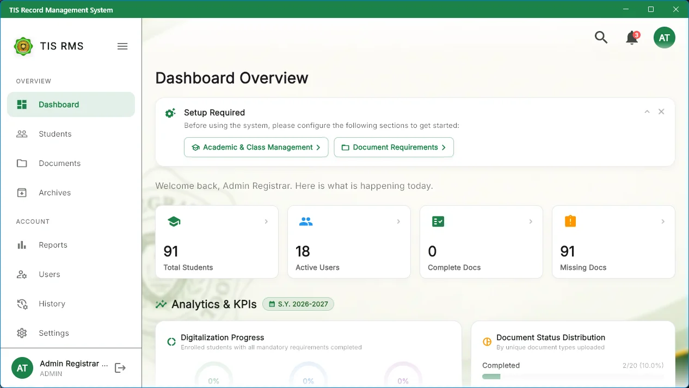
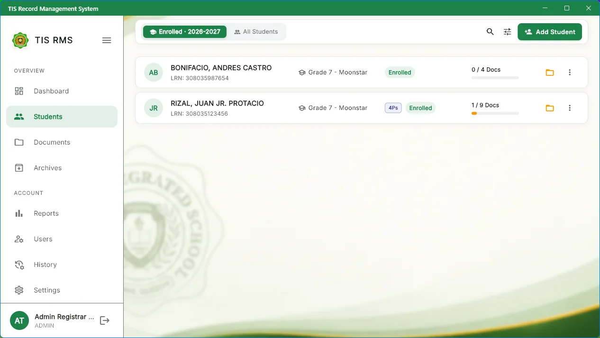
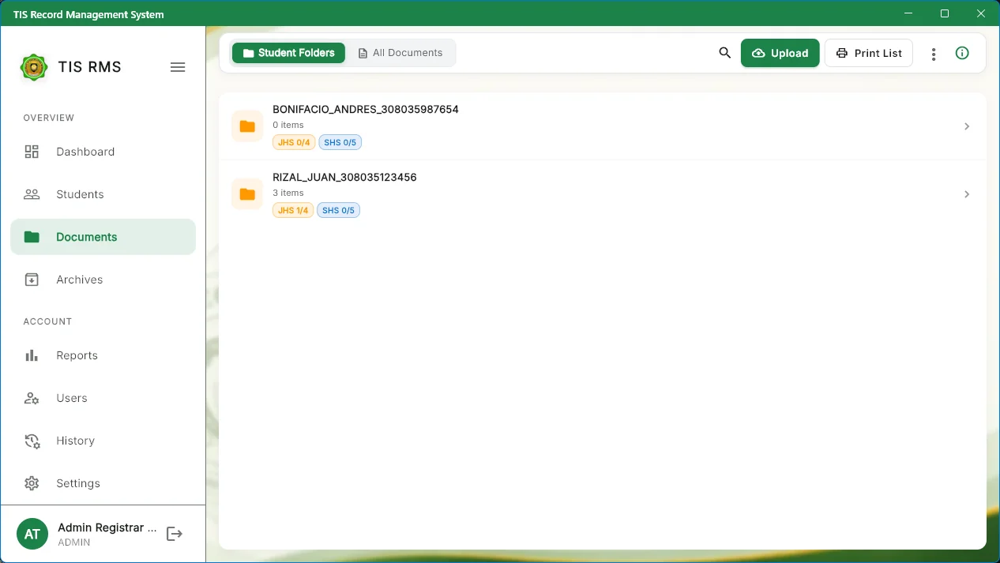
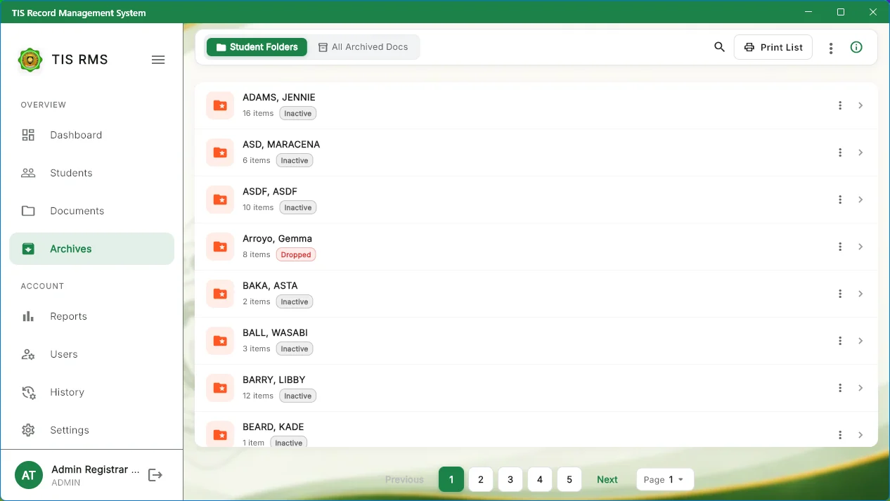
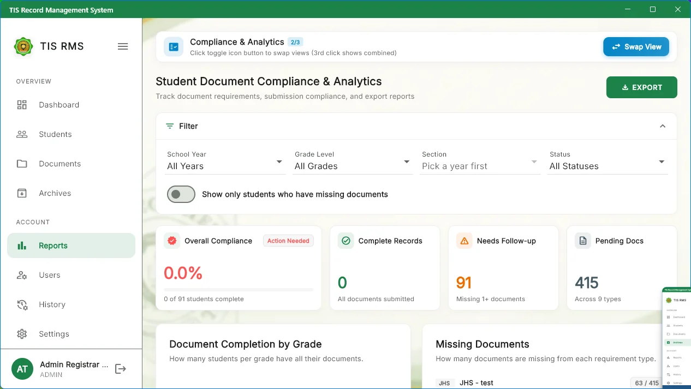
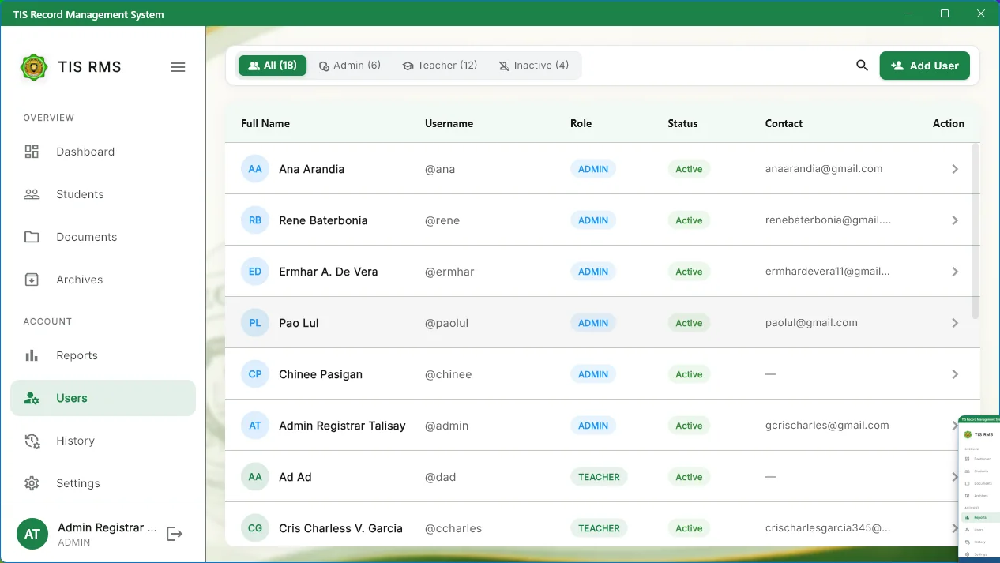
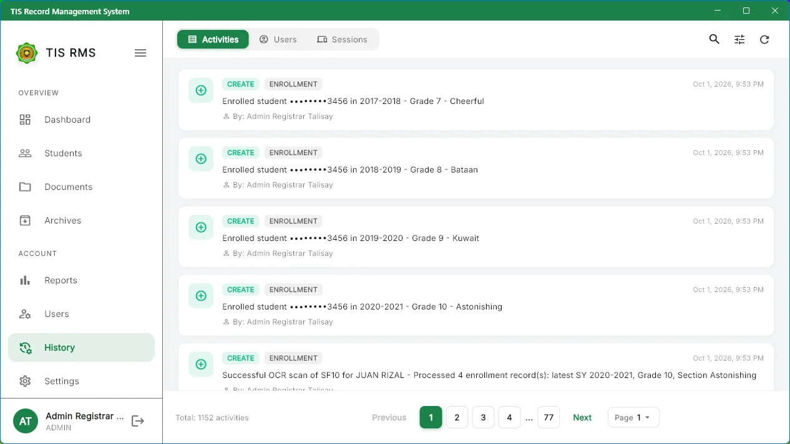

Talisay Integrated School - Records Management System
An institutional records management and document archiving system built for secondary schools. Supports offline SQLite operation, automated DepEd SF10 PDF compiling, multi-page batch scanning, and role-based access control.
User Roles & Security Matrix
Role-based access control policies governing registrar and teacher duties.
- Administrator: Unrestricted access to master data, user accounts, system configuration, permanent deletions, and school-wide reporting.
- Teacher / Staff: Scoped access to assigned sections, student enrollment profiles, document scanning, and Form 138/SF9 grade entry.
- Audit Logging: Every record access, print action, and modification is committed to an append-only audit trail with workstation IP and timestamp.
TIS-RMS separates duties between the school registrar (Administrator) and classroom advisors (Teachers). This ensures student records are safeguarded in accordance with DepEd orders and the Philippine Data Privacy Act of 2012 (RA 10173).
| Operation / Capability | Administrator | Teacher / Staff | Enforcement Rule |
|---|---|---|---|
| Access System Dashboard | School-Wide | Assigned Section | Scoped by teacher ID |
| Create / Edit Student Profile | Allowed | Allowed | Logged in audit trail |
| Upload Scanned Documents (SF9, PSA) | Allowed | Allowed | File type & size validated |
| Archive Completed Records | Allowed | Restricted | Admin credential required |
| Delete Student / Document | Allowed | Restricted | Moved to Soft-Delete Trash |
| Batch Print SF10 / SF9 Records | Allowed | Allowed | Compiled via background queue |
| Modify Checklist Requirements | Allowed | Restricted | Settings configuration panel |
| Database Backup & Maintenance | Allowed | Restricted | Password/PIN re-verification |
System Authentication & Access
Secure access portal for desktop workstations and touch tablet terminals.
- Single Sign-On Terminal: Users sign in using their registered username and encrypted password.
- Role Auto-Detection: Upon successful sign-in, the system automatically tailors the navigation drawer to either Administrator or Teacher permissions.
- Local Server Connection: The Android tablet client connects directly to the school host machine via local IP configuration.

Module 1: Dashboard & Analytics
Real-time status indicators, enrollment charts, and missing document flags.
- Summary Counters: Displays total enrolled students, total archived records, digitized pages, and folders with incomplete documents.
- Demographic Graphs: Visualizes student distribution across grade levels (Grade 7 through Grade 12) and academic strands.
- Activity Feed: Shows chronological stream of recent scans, edits, and status transitions.
The Dashboard serves as the central operational hub for both administrative staff and classroom advisers. Statistics are updated reactively from local SQLite cache queries, ensuring zero latency even when internet connectivity is unavailable.

Dashboard Metric Breakdown
Real-Time Stat Counters
Active Enrollees, Archived Students, Total Scanned Pages, and Incomplete Student Folders updated instantaneously through local reactive streams.
Grade & Strand Ratios
Visual distribution graphs indicating cohort sizes across Grade 7 through Grade 12, allowing administrators to balance section loading.
Audit Stream Feed
Chronological log of document scans, grade updates, and folder status changes with user attribution and timestamping.
Module 2: Student Management
Learner Reference Number (LRN) registry, student profiles, and multi-select batch actions.
- LRN Master Index: All records are keyed by DepEd's unique 12-digit Learner Reference Number to prevent duplication.
- Multi-Select Toolbar: Batch operations to print, export to Excel, or archive multiple selected students simultaneously.
- Missing Requirements Flag: Red status badges immediately indicate students with missing birth certificates or Form 137 records.
The Student module holds complete demographic and academic records. Search queries match against LRN, last name, first name, grade level, and section in real-time as you type.

Step-by-Step: Adding a New Student
Open Registration Form
Navigate to the Students screen and select Add Student in the upper right header or press keyboard shortcut Ctrl+N.
Provide Learner Profile
Enter the 12-digit LRN, legal name (Last, First, Middle, Suffix), date of birth, sex, grade level, section, and guardian contact numbers.
Automatic Folder Provisioning
The system creates a student folder with standard requirement slots: PSA Birth Certificate, SF9 (Form 138), Good Moral, and 2x2 Photo.
Save and Commit
Click Save Record. The student is immediately indexed in local SQLite storage and replicated across the local network.
Module 3: Documents & Virtual Folders
Tree directory structure, requirement taxonomy, and high-performance in-app rendering.
- Virtual Filing Cabinets: Organizes student documents by School Year, Grade Level, and Section without file path conflicts.
- Standard DepEd Taxonomy: Categorizes documents into PSA Birth Certificates, SF9 Progress Reports, SF10 Permanent Records, and Ancillary Certifications.
- Optimized Image Rendering: Multi-page documents and scanned PDFs are converted into optimized WebP thumbnails for immediate in-app viewing.
TIS-RMS implements a tree-based Virtual Folder Architecture mimicking physical registrar filing cabinets. Folders are automatically maintained per school year and section.

Supported Document Classifications
PSA / NSO Birth Certificate
Legal record verifying student name, date of birth, sex, and parentage during enrollment intake.
DepEd Form 138 (SF9)
Quarterly progress report detailing subject grades, core values, attendance, and annual promotion status.
DepEd Form 137 (SF10)
Official cumulative scholastic transcript spanning all school years attended in junior or senior high school.
Certificates & Credentials
Certificate of Good Moral Character, clinic medical records, DepEd Form 58, and transfer documentation.
Module 4: Retention & Archives
Long-term storage, graduation cohorts, transfer records, and real-time backend querying.
- Cohort Separation: Separates graduated or transferred students from active enrollment while keeping scholastic history accessible.
- Real-Time Backend Filter: Archive search queries execute asynchronous SQLite queries with debouncing, returning results in under 10ms.
- Reinstatement: Administrators can restore incorrectly archived students with a single click, preserving all attached document links.
Under national educational records policies, records of graduated students must be retained for permanent access. TIS-RMS isolates archived students from active section rosters while preserving full document searchability.

Archival Guardrails
Read-Only Locking
Archived transcripts are locked in read-only mode to prevent inadvertent grade changes after graduation certificates are issued.
Instant Restoration
Students archived by mistake can be restored to active registry status with all prior grades and documents preserved.
Cohort Multi-Filtering
Filter archives across School Year (e.g., 2023–2024), Grade Level, Section, or Status (Graduated, Transferred Out, Dropped).
Module 5: Batch Print Queue & PDF Compilation
Multi-record merging, auto-duplex formatting, official watermarking, and print spooling.
- Automated Compilation: Merges multiple student records into a single consolidated PDF package for division audits.
- Background Queue: Large print jobs process asynchronously in the background so workstation responsiveness is maintained.
- Watermark Enforcement: Embeds official school seal, verification hash, and "OFFICIAL COPY" watermarks on exported files.
Generating records for an entire graduating section can be time-consuming. TIS-RMS compiles and spools documents in batches of 10 to prevent memory pressure while producing clean, standardized vector PDF packages.
Select Target Students
In the Students or Archives screen, check the target student rows or choose Select All in Section.
Choose Document Types
In the Print dialog, select which records to include (e.g., SF10 only, or Complete Package: PSA + SF9 + SF10 + Certificate of Good Moral).
Formatting and Margins
The compiler formats pages according to DepEd margins, page numbers, and optional division office watermarks.
Spool to Printer or Save PDF
Send jobs directly to networked printers or download a consolidated multi-page PDF.
Module 6: DepEd SF10 & Reports
Official DepEd Form 137/SF10 compilation directly from Excel templates into standardized PDF outputs.
- DepEd Standard Templates: Reads official DepEd SF10 Excel workbooks for Junior High (JHS) and Senior High (SHS).
- Automated Computation: Calculates general averages, remedial subject credits, and promotion remarks automatically.
- Direct PDF Rendering: Produces print-ready vector PDF files with correct DepEd header seals and signatory blocks.
The system includes a dedicated Excel-to-PDF Template Engine. It loads official DepEd SF10 spreadsheets, fills demographic and scholastic data into template cells, and renders standardized vector PDFs.

Module 7: User Accounts & Audit Trail
Account provisioning, role assignments, security sessions, and tamper-evident audit history.
- Data Privacy Act Compliance: Maintains an immutable activity log recording user ID, target student LRN, action type, IP address, and timestamp.
- Account Administration: Manage teacher accounts, assign section advisory roles, and reset temporary credentials.
- Access Forensics: Filter audit logs by user, action (View, Update, Delete, Print), or student record.
To comply with the Philippine Data Privacy Act of 2012 (RA 10173), all actions performed within TIS-RMS—including viewing, downloading, printing, editing, and deleting records—are committed to an immutable audit ledger.

Audit History & Activity Ledger
The History screen logs every operation performed in the system. Entries cannot be cleared or modified by non-root users.

Module 8: Settings & Mandatory Checklist
System customization, requirement checklists, database backups, and network sync configurations.
- Checklist Configurator: Configure mandatory versus optional documents per grade level (JHS vs. SHS requirements).
- Institutional Headers: Set School Name, DepEd School ID, District, Division, and Region for all printed transcripts.
- Local Database Backup: Generate timestamped SQLite snapshot files for off-site backup or disaster recovery.
The Settings panel allows Administrators to configure school profile headers, customize required document checklists per grade level, export offline SQL backups, and check local network health.


Managing Mandatory Document Rules
Administrators can toggle whether a document is Mandatory or Optional. If a student is missing any required document, their record is automatically flagged with a red badge on the dashboard and student list.
Keyboard Shortcuts (Windows Desktop)
Productivity keybindings available throughout the desktop client.
| Key Combination | Operation | Scope / Context |
|---|---|---|
| Ctrl + F or / | Focus Search Input Field | Global |
| Ctrl + N | Open "New Student" Registration Dialog | Students Screen |
| Ctrl + U | Open Document Upload / Scanner Dialog | Documents Screen |
| Ctrl + P | Open Batch Print Compilation Dialog | Documents / Archives Screen |
| Esc | Dismiss Active Dialog or Lightbox Modal | Global |
Frequently Asked Questions (FAQ)
Detailed answers to common technical, operational, and DepEd compliance questions.
System Access & Security
Teachers and staff are issued an individual username and password by the School Registrar or System Administrator. If this is your first time logging in, you will be prompted to choose a personal password.
Passwords can be reset by any authorized Administrator. The Administrator navigates to User Accounts, selects the user's name, and clicks Reset Password. The user is issued a temporary password that must be updated upon their next sign-in.
Yes. TIS-RMS supports concurrent connections across the local area network (LAN). Teachers can scan records, update profiles, and check document checklists on their Android tablets or desktop PCs simultaneously without data lock conflicts.
Student Records & Enrollment
TIS-RMS strictly enforces a unique constraint on the 12-digit Learner Reference Number (LRN). If a user attempts to register an LRN that already exists in either the active directory or the archives, the system prevents duplicate creation and prompts the user to view the existing student record.
The red badge indicates that one or more documents marked as Mandatory in the Settings Checklist (e.g., PSA Birth Certificate or Grade 7 SF10) have not yet been uploaded for that student. Once the missing file is uploaded, the badge automatically updates to green.
Navigate to the student's profile, click Update Status, and select Transferred Out. Enter the receiving school name and division. The student record is cleanly moved to the Archives under the Transferred cohort, locking it from active section attendance while keeping scholastic history accessible.
Document Management & Scanning
The system accepts PDF documents, PNG images, and JPEG files up to 10MB per file. During upload, the backend automatically optimizes the file and generates WebP thumbnails for instantaneous in-app rendering.
TIS-RMS converts scanned PDF pages into optimized WebP images on the server. Clicking any document card opens the built-in high-resolution preview modal with instant page navigation, eliminating the need to launch third-party PDF viewers like Adobe Acrobat.
Right-click the document card (or tap the three-dot context menu on tablet) and select Regenerate Thumbnail. The system will re-parse the raw source file and re-render lossless WebP preview pages.
SF10 & DepEd Reports
The system loads the official DepEd Excel SF10 template workbook, pulls student demographics, quarterly ratings, general averages, and remedial notes directly from the database, and compiles them into a standardized vector PDF with official school headers and signatures.
From the Students or Archives screen, select the desired section using the filter dropdown, click the Select All in Section checkbox, and tap the Batch Print button. The system queues the records in background chunks and outputs a single consolidated PDF package ready for duplex printing.
Retention, Archives & Data Privacy
Archiving preserves the student's complete record permanently in read-only storage for future transcript requests (SF10 reproduction) while keeping active class lists clean. Deleting moves a record to the soft-delete trash for removal of erroneous entries. Teachers cannot delete records.
Every view, download, edit, and print action is recorded in an immutable audit ledger with the user's account name, terminal IP address, and timestamp. Passwords use salted bcrypt hashes, and records cannot be accessed outside the authenticated local school network.
Network Sync & Offline Operation
No. TIS-RMS runs completely offline on the school's local area network (LAN). It uses a local SQLite database that guarantees full system operation even during power interruptions or ISP service outages.
Connect both the server computer and tablet to the same Wi-Fi router. On the server, check your IPv4 address using ipconfig. On the tablet login screen, enter the host address (e.g., 192.168.1.100:3000) and tap Connect.
Administrators should create a database backup at least once a week or before major grading periods. Navigate to Settings > Database Backup and click Create Snapshot. Save the exported .sqlite file to a secondary external USB drive or secured storage.
Troubleshooting & Diagnostics
Recommended resolutions for connectivity, printing, and document rendering questions.
Android Tablet Cannot Reach Server
Verify both the computer hosting tis_rms_server and the Android tablet are connected to the same local network router. Ensure the Server IP in the app login matches the host machine's LAN address (e.g., 192.168.1.100:3000).
Scanned Document Preview Fails
If an uploaded PDF has damaged headers, select Regenerate Thumbnail from the document context menu. The server will re-render pages as lossless WebP images.
Batch Print Memory Allocation
When compiling large cohorts (>50 students), ensure the host machine has at least 500MB free temporary disk space. TIS-RMS streams pages in chunks of 10 to prevent memory exhaustion.